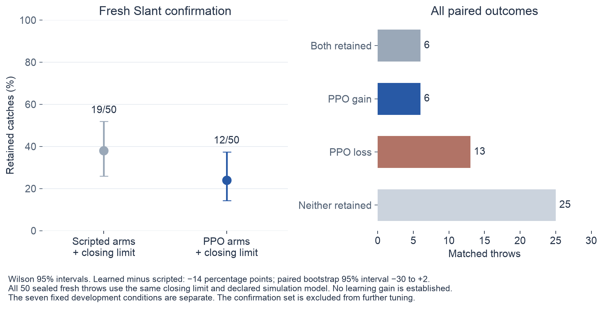

Abstract
Catching a pass is not catching a ball thrown at you. The receiver runs a route, works out where the ball will arrive, and has to hold on while its own body is still moving. We study that in simulation: a Unitree G1 with Aero hands, three routes, a fixed passing machine.
One change clearly helped. Making the finger tendons respond to their own actuator encoders raised retained Go catches from 2 of 50 throws to 34 of 50, on a confirmation set frozen before it was run.
One change clearly did not. On Slant, an arm controller trained with PPO retained 12 of 50 against 19 for a scripted baseline given the same finger limit. We report it as a loss.
Everything here is simulation. No physical robot has caught a football, and every catch shown is a walking catch.
The setup
The receiver is a Unitree G1 with compact Aero hands, thrown to by a fixed machine. Locomotion comes from pretrained G1 controllers that we hold fixed; our work is the interception and the grip.
Go
Straight stem, ten yards. The hardest case for holding on: the ball arrives while the receiver is still moving.
Slant
Two steps, then a 45° cut inside. The receiver meets the ball across its body.
Out
Five yards, then a 90° break to the sideline. Turning and arriving square to the ball dominates.
One selected throw per route, taken from the archived play viewer. The counts below come from 50-throw batches, not from these clips.
A catch counts only if the ball still has real hand support when the play ends, with no help from the torso, the floor or the hand mounts. Everything else is a miss, however convincing the contact looked.
What we tried, and what it gave us
| Change | Baseline | Changed | Verdict |
|---|---|---|---|
| Go: fingers follow encoder feedback | 2/50 | 34/50 | Clear gain |
| Out: synchronized entry plus finger regulation | 9/50 | 8/50 | Rejected |
| Slant: learned arms, fixed conditions | 1/7 | 4/7 | Fixed tests only |
| Slant: learned arms, 50 fresh throws | 19/50 | 12/50 | Lost to baseline |
The one clear gain
The original Go controller closed the fingers to a fixed target and stopped listening, so a hand that met the ball early kept squeezing into it. The change is small: after the visual grasp cue, each of the eight finger tendons limits requested closure so the commanded target stays at least 1.5 mm behind where the finger actually is. The thumb commands are untouched.

The strongest result in the project, and a narrow one: one frozen controller, throws from a distribution declared in advance. Nothing here speaks to other distances, other seeds, or a real hand.
The one clear loss
Slant looked like the place for a learned controller. On seven fixed conditions, an arm policy trained with PPO raised clean two-hand control from 171 ms to 873 ms by moving the arms before the predicted arrival.
Then we froze it and ran 50 fresh throws against a scripted baseline. The learned arms lost: 12 retained against 19, six gained and thirteen lost. The paired difference is −14 points, with a bootstrap interval of −30 to +2.

Longer contact is not a catch. That is the most useful thing this project taught us, which is why the negative result is on this page.
Out, and the ten-yard probe
Out is limited before the hands ever close. In an audit of 150 archived plays, 32 of 50 original Out throws hit the torso before the hands, and 38 never reached 0.75 s of clean two-hand control. A candidate controller that combined synchronized entry with finger regulation retained 8 of 50 against 9 for the original, so we kept the original.

Ten yards is the longest throw we tested: first contact 9.97 yards downfield, longest clean two-hand interval 1.645 s at 0.93 m/s with no foot flights. Still a walking catch, and the ball is not held through the final frame.
When the catch is missed
A dropped pass becomes a safety problem when the ball rolls into the feet. In one natural failed Go catch, a camera spots the loose ball in the predicted foot corridor and cancels the walking command for 250 ms. The warning arrives at 6.88 s; the ball reaches the ankle at 7.75 s.
| Measure | Missed catch | With visual avoidance |
|---|---|---|
| Peak head contact force | 405.59 N | 0 N |
| Peak floor force outside the feet | 3,935.71 N | 0 N |
| Largest 150 ms floor impulse | 91.37 N·s | 0 N·s |
This is scripted avoidance with a camera added, not a learned recovery and not a return to standing.
How the receiver sees
Ball and body estimates come from rendered colour and depth images, surveyed external cameras and a marker rig; IMU and joint encoders give posture. Exact simulator state is used only to score, and never enters the controller.
| Component | Inputs | Job |
|---|---|---|
| Interception | RGB-D, timestamps, calibration, marker geometry | Where the ball will be, and where I am |
| Hand feedback | IMU, body encoders, 14 actuator encoders | Posture and requested finger closure |
| Arm policy | The same estimates, plus known commands | Small pre-arrival arm adjustments, limited to ±0.18 rad |
| Scoring | Full simulator state, contacts, forces | Possession, support, balance, limits, route accuracy |
What this is not
- Not hardware. No physical G1 has run any of this. Contact materials, actuator transmissions and camera noise are uncalibrated.
- Not a running catch. Every displayed receive qualifies as walking; catching inside a running gait is open.
- Not a reliability estimate. Each result is one frozen checkpoint with no seed variation, so these intervals say nothing about seed-to-seed spread.
- Not deployable as is. It needs surveyed cameras, a marker rig, a link to the passing machine and an Aero hand driver. No ARM64 controller image exists.
Reproduce it
The simulator and tests are in the repository. This command renders a short flight episode and writes the sensor and truth arrays; it needs only numpy and mujoco.
sh run.shIt prints Rendered 60 MuJoCo RGB-D frames at 30 Hz and writes flight-sensor.npz, flight-truth.npz and flight-overview.npz. It does not re-render the videos here: those come from frozen study runs, whose simulator trees are too large to ship.
The earlier 600-trial study, including the methods we abandoned, is preserved unedited in the previous write-up.